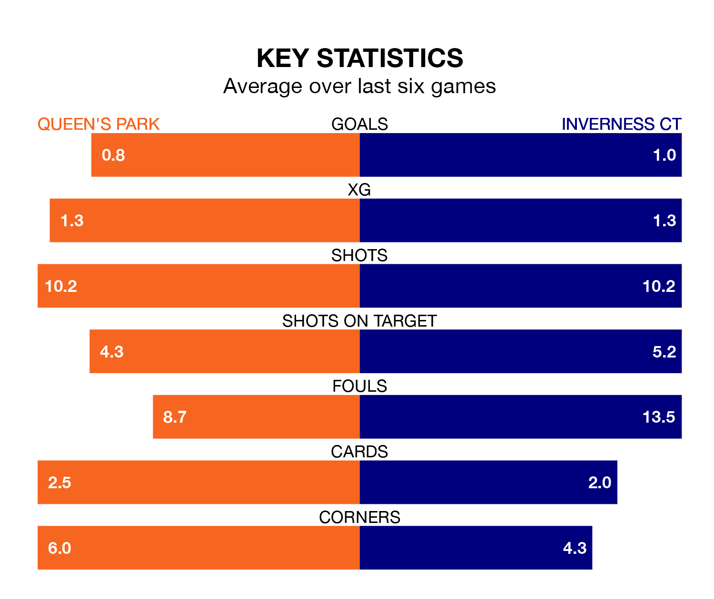

Struggling Inverness CT face Queen's Park away at Hampden Park on Saturday looking to build on a win in their last league outing.
After securing all three points with a 2-1 victory over Arbroath on April 6, ICT sit ninth in the Championship.
They travel to play a Queen's Park side eighth in the standings, who lost in their last match, 5-0 against Dundee United.
In Ruari Paton, Queen's Park have one of the league's most on-form strikers so far this season. He has notched 16 goals in 32 appearances, to sit second in the scoring charts.
His goal rate of one every 178 minutes is quicker than that of Billy McKay, Inverness CT's top scorer with a goal every 294 minutes, and a total of eight goals in 32 games.
In the last 10 years, Queen's Park and Inverness CT have played each other on eight occasions. Queen's Park won four of them, Inverness CT two, and they drew twice.
On average, the Spiders scored 1.1 goals and ICT 1.4 in those matches.
Their last meeting was on February 3, when Queen's Park won 1-0 away.
With 36 goals in 32 games so far this season, ICT are the league's second-lowest scorers with 1.1 goals per game. But they are conceding fewer than average too, letting in 37 goals at a rate of 1.2 per game.
The Spiders are also below average scorers, with 1.3 goals per game, compared to a league average of 1.4. They have conceded 1.7 goals per game.
The hosts are in disappointing form in the Championship, with one win and three draws from their last six games.
With two wins and two draws over that period, the away side's form is slightly better – they have taken eight points from 18, compared to Queen's Park's six.
Updated: 14:47 (UTC), 09/04/24